Comissão Organizadora
A realização da Semana Acadêmica BG-CSTADS só é possível graças ao empenho, dedicação e colaboração dos alunos e egressos do curso. Nosso sincero agradecimento a cada integrante da comissão organizadora, que contribui para construir um evento marcante, inovador e acolhedor para toda a comunidade acadêmica. Juntos, celebramos o passado, vivemos o presente e inspiramos o futuro da computação em Bagé!
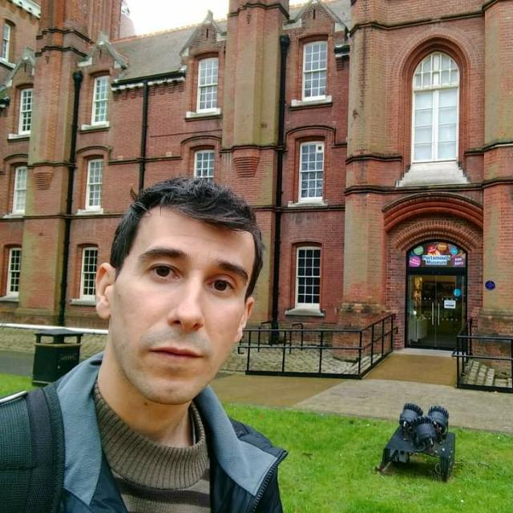
Prof. Alessandro Dias
"Organizar é criar oportunidades de aprendizado para todos."
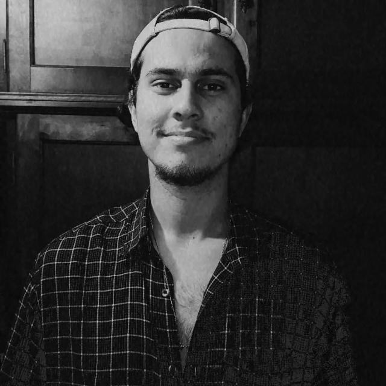
Arthur Pires
"Onde ideias viram sistemas e alunos viram profissionais."
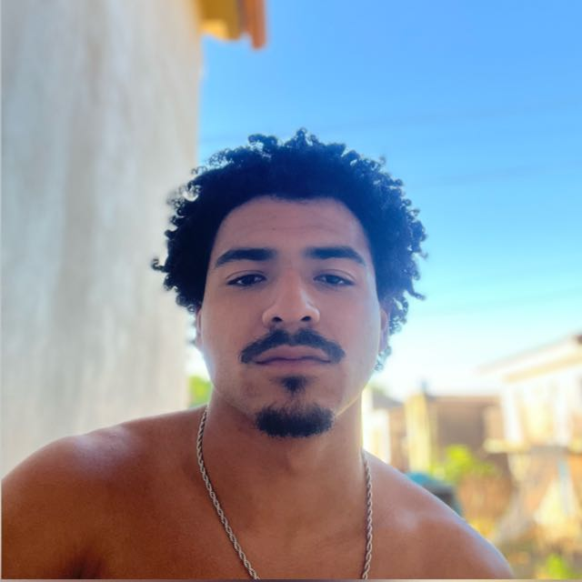
Daniel de Freitas
"Do problema à solução: o caminho é guiado por dados e criatividade."
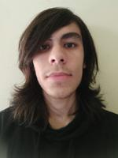
Gabriel Tassinari
"Construindo conexões entre conhecimento e prática."
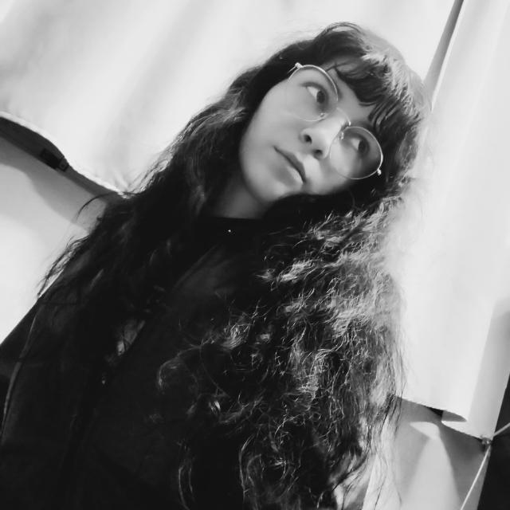
Juliane Sena
"Participar da comissão é deixar um legado no curso."
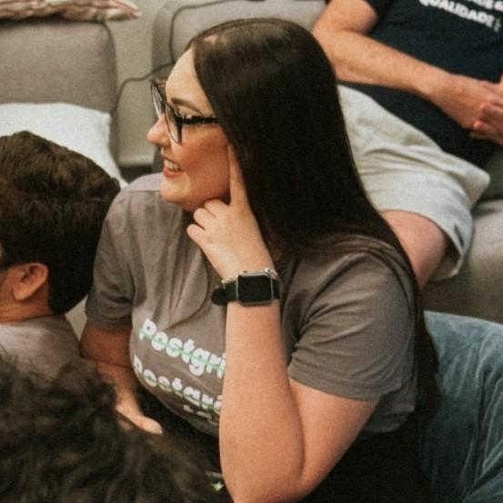
Laura Perera
"Cada edição da SAADS é uma história que ajudamos a contar."
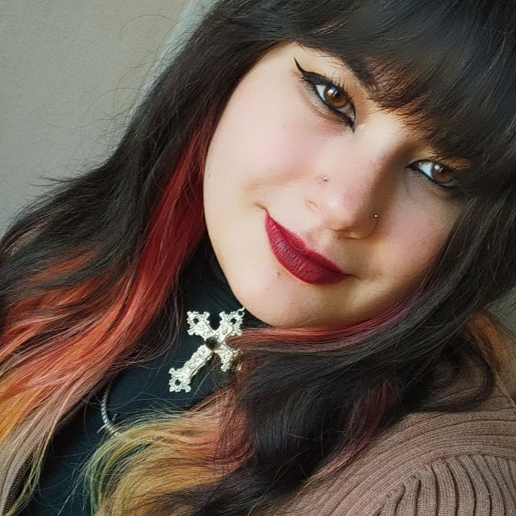
Natália Cunha
"O evento é feito de pessoas para pessoas. Orgulho de contribuir."
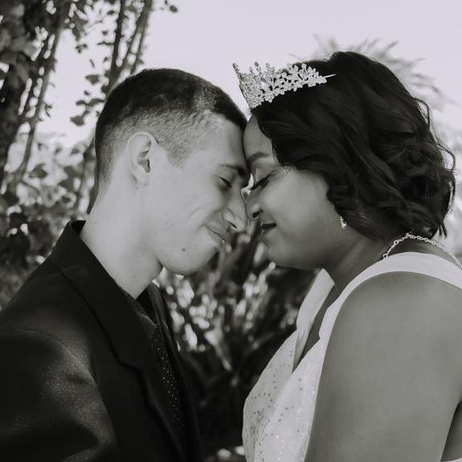
Natanael dos Santos
"Sou o da esquerda."
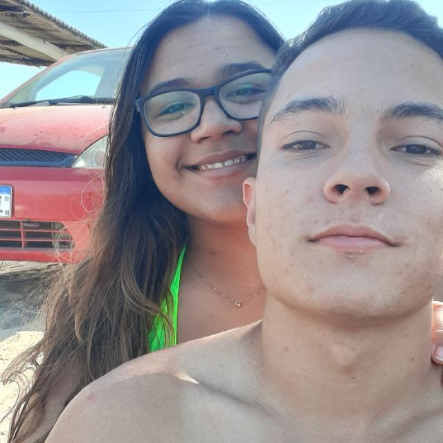
Nicolas Colman
"Sou o da direita."
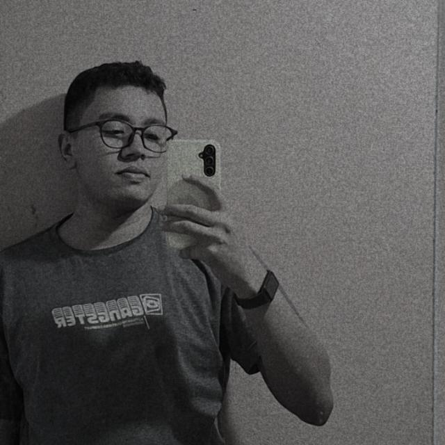
Matheus Oliveira
"Onde a análise encontra a inovação, nasce a tecnologia de verdade."
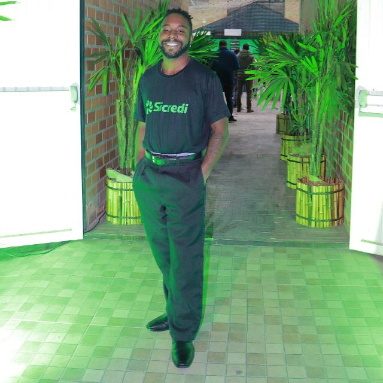
Matheus Fonseca
"A vingança nunca é plena, mata a alma e a envenena."
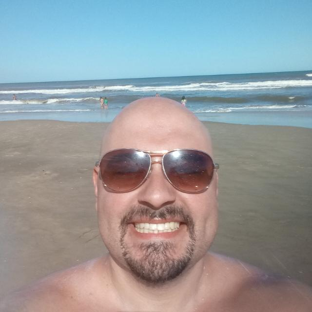
Prof. Thales Maciel
"Analisar sistemas é ficar um tempo discutindo se o ovo veio antes da galinha."

Wellington Oliveira
"Eu quero, eu posso."